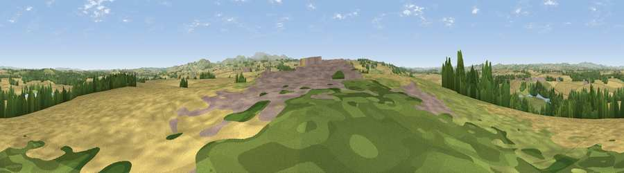

Shidlaw Hill
#18234 in England · top 62% of its area beats it · near CarhamThe view, rendered

A 360° render of this exact spot computed from the terrain model, tree cover and land cover — summer colours, afternoon light, calibrated against photographs of famous viewpoints. Real trees, hedges and buildings will differ in detail.
The panorama
Grey silhouette: terrain skyline in each direction (720 bearings, Earth curvature and refraction included). Dashed green: skyline with trees (+15 m) and buildings (+8 m) as obstacles. Blue strip: how far the ground is visible on each bearing.
Where the view opens
Wedge length = distance to the farthest visible ground on that bearing (vegetation-aware). Rings at 10, 25 and 50 km.
What fills the view
64% cropland · 23% grassland · 9% woodland · 3% built-up · 1% water
Angular shares of the visible panorama (visual magnitude), not map area. Landscape diversity 0.44 (0–1 Shannon).
Key numbers
More beautiful places nearby
The staircase of upgrades: each row has a higher view potential than everything closer. Driving times are estimates from straight-line distance, calibrated against real road routing — check an actual route before setting out.
| Place | Direction | Drive | Score |
|---|---|---|---|
| Viewpoint near Cornhill on Tweed | ESE · 4 km | ~10 min | 58.1 |
| Viewpoint near Wark | SE · 5 km | ~11 min | 70.1 |
| Moneylaws Hill | ESE · 7 km | ~15 min | 83.0 |
| Wester Tor | SE · 15 km | ~26 min | 84.9 |
| Viewpoint near Kirknewton | SE · 15 km | ~27 min | 86.1 |
| Greensheen Hill | E · 25 km | ~41 min | 87.5 |
| Viewpoint near Chillingham | ESE · 30 km | ~47 min | 88.1 |
| Ullock Pike | SSW · 123 km | ~147 min | 89.4 |
55.63630, -2.30853 · source: dobih hill · position refined by local search. Computed location — check access rights before visiting.